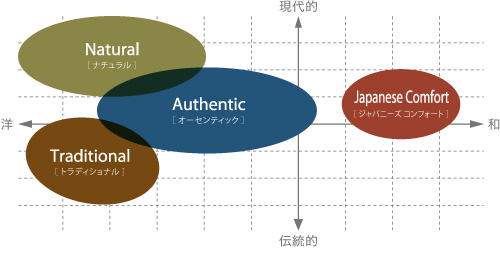

インテリアスタイル
永く住まうかけがえのない家だから、
こだわりを持ったインテリアを。

ナチュラル
自然のぬくもりが感じられる色合いを基調とした、あたたかなインテリア。
開放感があり、陽だまりにいるかのような心地よさを実現。

ジャパニーズコンフォート
素材感や上質感を重視した落ち着きのあるインテリア。
コンクリート住宅の持つ都会的なイメージと調和し、洗練された雰囲気に。
オーセンティック
素材感や上質感を重視した落ち着きのあるインテリア。
コンクリート住宅の持つ都会的なイメージと調和し、洗練された雰囲気に。
トラディショナル
格調ある様式を現代的にアレンジした優雅なインテリア。
流行に左右されない豊かさを持つ上質なデザイン。